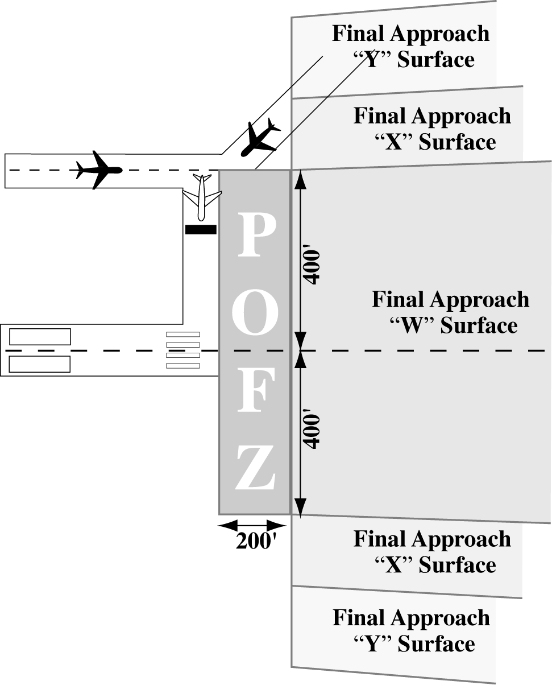

Chapter 3. Airport Traffic Control - Terminal
Section 7. Taxi and Ground Movement Procedures
3-7-1. GROUND TRAFFIC MOVEMENT
Issue by radio or directional light signals specific instructions which approve or disapprove the movement of aircraft, vehicles, equipment, or personnel on the movement area except where permitted in an LOA.
- Do not issue conditional instructions that are dependent upon the movement of an arrival aircraft on or approaching the runway or a departure aircraft established on a takeoff roll. Do not say, “Line up and wait behind landing traffic,” or “Taxi/proceed across Runway Three-Six behind departing/landing Citation.” The above requirements do not preclude issuing instructions to follow an aircraft observed to be operating on the movement area in accordance with an ATC clearance/instruction and in such a manner that the instructions to follow are not ambiguous.
- Do not issue unconditional instructions when authorizing movement on a runway/taxiway for the purpose of airfield checks or other airport operations. Instructions must ensure positive control with specific instructions to proceed on a runway or movement area, and as necessary, hold short instructions.
- Do not use the word “cleared” in conjunction with authorization for aircraft to taxi or equipment/vehicle/personnel operations. Use the prefix “taxi,” “proceed,” or “hold,” as appropriate, for aircraft instructions and “proceed” or “hold” for equipment/vehicles/personnel.
- Intersection departures may be initiated by a controller or a controller may authorize an intersection departure if a pilot requests. Issue the measured distance from the intersection to the runway end rounded “down” to the nearest 50 feet to any pilot who requests and to all military aircraft, unless use of the intersection is covered in appropriate directives.
- Do not use the term “full length” when the runway length available for departures has been temporarily shortened. On permanently shortened runways, do not use the term “full length” until the Chart Supplement is updated to include the change(s).
3-7-2. TAXI AND GROUND MOVEMENT OPERATIONS
Issue the route for the aircraft/vehicle to follow on the movement area in concise and easy to understand terms. The taxi clearance/route must include the specific route to follow. When a taxi clearance to a runway is issued to an aircraft, confirm the aircraft has the correct runway assignment.
- When authorizing an aircraft to taxi or a vehicle to proceed on the movement area, specify the taxi instructions/route. If it is the intent to hold the aircraft/vehicle short of:
- A runway: issue the route up to the runway hold short point. When issuing a runway crossing clearance, include specific instructions on where to cross the runway;
- Any other point along the route, issue:
- the route up to the hold short point, or
- the entire route and then state the hold short instructions.
After issuing a crossing clearance, specify the taxi instructions/route an aircraft/vehicle is to follow, if not previously issued.
- When authorizing an aircraft to taxi to an assigned takeoff runway, state the departure runway followed by the specific taxi route. Issue hold short instructions, in accordance with subparagraph a above, when an aircraft will be required to hold short of a runway or other points along the taxi route.
- Issue a crossing clearance to aircraft for each runwaytheirroute crosses. An aircraft must have crossed a previous runway before another runway crossing clearance may be issued. At those airports where the taxi distance between runway centerlines is 1,300 feet or less, multiple runway crossings may be issued with a single clearance. The air traffic manager must submit a request to the appropriate Service Area Director of Air Traffic Operations and receive approval before authorizing multiple runway crossings.
- When an aircraft/vehicle is instructed to “follow” traffic and requires a runway crossing, issue a runway crossing clearance in addition to the follow instructions and/or hold short instructions, as applicable.
- Issue a crossing clearance to vehicles for each runway their route crosses. A vehicle must have crossed a previous runway before another runway crossing clearance may be issued.
- Vehicles that have been issued a clearance onto a runway to conduct runway operations are authorized to cross intersecting runways, unless otherwise restricted. Issue hold short instructions as needed.
- Crossing of active runway(s) by aircraft/vehicle(s):
- During departure operations, ensure that aircraft/vehicles intending to cross a runway do not cross the runway holding position markings until the controller visually observes the departure aircraft in a turn, or the departure aircraft has passed the point where the crossing aircraft/vehicle is located, regardless of altitude, unless authorized in FAA Order JO 7110.65, paragraph 3-10-10, Altitude Restricted Low Approach.
- During arrival operations, ensure the following:
- An aircraft/vehicle has completed crossing prior to an arriving aircraft crossing the landing threshold, or
- An aircraft/vehicle must not cross the runway holding position markings until an arriving aircraft has passed the point at which the crossing is intended, or
- An aircraft/vehicle must not cross the runway holding position markings until an arriving aircraft has completed landing roll and:
- Acknowledged the instruction to exit the runway prior to the point at which the crossing is intended, or
- Acknowledged the instruction to hold short of the point at which the crossing is intended, or
- Is visually observed exiting the runway prior to the point at which the crossing is intended.
- LAHSO application: When the arriving aircraft has acknowledged a clearance to land and hold short in accordance with FAA Order JO 7110.118, Land and Hold Short Operations (LAHSO), an aircraft/vehicle may cross the runway beyond the arriving aircraft's hold short point. The crossing aircraft/vehicle must be informed the landing traffic will hold short of the intersection.
- Request a read back of runway hold short instructions when it is not received from the pilot/vehicle operator.
- Issue progressive taxi/ground movement instructions when:
- A pilot/operator requests.
- The specialist deems it necessary due to traffic or field conditions, e.g., construction or closed taxiways.
- Necessary during reduced visibility, especially when the taxi route is not visible from the tower.
- Issue instructions to expedite a taxiing aircraft or a moving vehicle.
- Issue instructions to aircraft/vehicle to hold short of an approach/departure hold area when required.
3-7-3. GROUND OPERATIONS
Avoid clearances which require:
- Super or heavy aircraft to use greater than normal taxiing power.
- Small aircraft or helicopters to taxi in close proximity to taxiing or hover‐taxi helicopters.
3-7-4. RUNWAY PROXIMITY
Hold a taxiing aircraft or vehicle clear of the runway as follows:
- Instruct aircraft or vehicle to hold short of a specific runway.
- Instruct aircraft or vehicle to hold at a specified point.
- Issue traffic information as necessary.
3-7-5. PRECISION APPROACH CRITICAL AREA
- Aircraft and vehicle access to the ILS critical area must be controlled to ensure the integrity of ILS course signals whenever the official weather observation is a ceiling of less than 800 feet or visibility less than 2 miles. Unless the arriving aircraft has reported the runway in sight or is circling to land to another runway, do not authorize vehicles/aircraft to operate in or over the critical area, except as specified in subparagraph a1, whenever an arriving aircraft is inside the ILS outer marker (OM) or the fix used in lieu of the OM.
- LOCALIZER CRITICAL AREA
- Do not authorize vehicle or aircraft operations in or over the area when an arriving aircraft is inside the ILS OM or the fix used in lieu of the OM when the official weather observation is a ceiling of less than 800 feet or visibility less than 2 miles, except:
- A preceding arriving aircraft on the same or another runway that passes over or through the area while landing or exiting the runway.
- A preceding departing aircraft or missed approach on the same or another runway that passes through or over the area.
- In addition to subparagraph a1(a), when the official weather observation indicates a ceiling of less than 200 feet or RVR 2,000 feet, do not authorize vehicles or aircraft operations in or over the area when an arriving aircraft is inside the middle marker, or in the absence of a middle marker, 1/2 mile final.
- Do not authorize vehicle or aircraft operations in or over the area when an arriving aircraft is inside the ILS OM or the fix used in lieu of the OM when the official weather observation is a ceiling of less than 800 feet or visibility less than 2 miles, except:
- GLIDESLOPE CRITICAL AREA. Do not authorize vehicles or aircraft operations in or over the area when an arriving aircraft is inside the ILS OM or the fix used in lieu of the OM unless the arriving aircraft has reported the runway in sight or is circling to land on another runway when the official weather observation indicates a ceiling of less than 800 feet or visibility less than 2 miles.
- LOCALIZER CRITICAL AREA
- Operators commonly conduct “coupled” or “autoland” approaches to satisfy maintenance, training, or reliability program requirements. Promptly issue an advisory if the critical area will not be protected when an arriving aircraft advises that a “coupled,” “CATIII,” “autoland,” or similar type approach will be conducted and the official weather observation indicates a ceiling of 800 feet or more, or the visibility is 2 miles or more.
- The Department of Defense (DoD) is authorized to define criteria for protection of precision approach critical areas at military controlled airports. This protection is provided to all aircraft operating at that military controlled airport. Waiver authority for DoD precision approach critical area criteria rests with the appropriate military authority.
3-7-6. PRECISION OBSTACLE FREE ZONE (POFZ) AND FINAL APPROACH OBSTACLE CLEARANCE SURFACES (OCS)
- Ensure the POFZ is clear of traffic (aircraft or vehicles) when an aircraft on a vertically-guided final approach is within 2 miles of the runway threshold and the official weather observation indicates the ceiling is below 300 feet or visibility is less than 3/4 SM to protect aircraft executing a missed approach.
- Ensure the final approach OCS (e.g., ILS /LPV W, X, and Y surfaces) are clear of aircraft/vehicles when an aircraft on the vertically-guided approach is within 2 miles of the runway threshold and the official weather observation indicates the ceiling is below 800 feet or visibility is less than 2 SM to protect aircraft executing a missed approach.
- If it is not possible to clear the POFZ or OCS prior to an aircraft reaching a point 2 miles from the runway threshold and the weather is less than described in subparagraph a or b above, issue traffic to the landing aircraft.
FIG 3-7-1Precision Obstacle Free Zone (POFZ) 